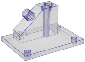
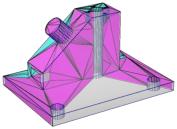
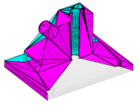
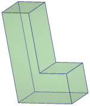
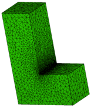
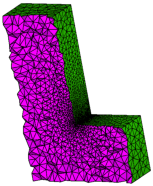

This section describes the use of TetGen as a stand-alone program. It is invoked from the command line with a set of switches and an input file name. Switches are used to control the behavior of TetGen and to specify the output files. In correspondence to the different switches, TetGen will generate the Delaunay tetrahedralization, or the constrained (Delaunay) tetrahedralization, or the quality conforming (Delaunay) mesh, etc.
tetgen [-pYrq_Aa_miO_S_T_XMwcdzfenvgkJBNEFICQVh] input_file
Underscores indicate that numbers may optionally follow certain switches. Do not leave any space between a switch and its numeric parameter. These switches are explained in Section 4.2.
input_file can be different files depending on the switches you use. If no command line switch is used, it must be a file with extension .node which contains a list of 3d points and the Delaunay tetrahedralization of this point set will be generated.
If the -p switch is used, input_file must be a file with one of the following extensions: .poly, .smesh, .off, .stl, .ply, and .mesh, which describes the boundary (a surface mesh) of a 3d piecewise linear complex. The boundary constrained (Delaunay) tetrahedralization of this object will be generated. If the -q switch is used simultaneously, a boundary conforming quality tetrahedral mesh will be generated.
If the -r switch is used, an existing tetrahedral mesh will be read. You must supply .node and .ele files which describe the tetrahedral mesh. Optionally a .face and a .edge file can be supplied which contain the boundary faces and edges of the mesh. input_file can have no file extension.
If the switch -q is applied, the mesh will be refined with respect to the new quality measure and variant constraints. Optionally, and a .vol, a .mtr, and a .var file can be supplied which contain the mesh element size control information.
File formats are described in Section 5.
An overview of all command line switches and a short description follow. These switches are shown by invoking TetGen without any switch and input file. Detailed descriptions of these switches are given in the following subsections.
| -p | Tetrahedralizes a piecewise linear complex (PLC). |
| -Y | Preserves the input surface mesh (does not modify it). |
| -r | Reconstructs a previously generated mesh. |
| -q | Refines mesh (to improve mesh quality). |
| -R | Mesh coarsening (to reduce the mesh elements). |
| -A | Assigns attributes to tetrahedra in different regions. |
| -a | Applies a maximum tetrahedron volume constraint. |
| -m | Applies a mesh sizing function. |
| -i | Inserts a list of additional points. |
| -O | Specifies the level of mesh optimization. |
| -S | Specifies maximum number of added points. |
| -T | Sets a tolerance for coplanar test (default 10−8). |
| -X | Suppresses use of exact arithmetic. |
| -M | No merge of coplanar facets or very close vertices. |
| -w | Generates weighted Delaunay (regular) triangulation. |
| -c | Retains the convex hull of the PLC. |
| -d | Detects self-intersections of facets of the PLC. |
| -z | Numbers all output items starting from zero. |
| -f | Outputs all faces to .face file. |
| -e | Outputs all edges to .edge file. |
| -n | Outputs tetrahedra neighbors to .neigh file. |
| -v | Outputs Voronoi diagram to files. |
| -g | Outputs mesh to .mesh file for viewing by Medit. |
| -k | Outputs mesh to .vtk file for viewing by Paraview. |
| -J | No jettison of unused vertices from output .node file. |
| -B | Suppresses output of boundary information. |
| -N | Suppresses output of .node file. |
| -E | Suppresses output of .ele file. |
| -F | Suppresses output of .face and .edge file. |
| -I | Suppresses mesh iteration numbers. |
| -C | Checks the consistency of the final mesh. |
| -Q | Quiet: No terminal output except errors. |
| -V | Verbose: Detailed information, more terminal output. |
| -h | Help: A brief instruction for using TetGen. |
Given a set of 3d points or weighted points, TetGen generates the Delaunay tetrahedralization or the weighted Delaunay tetrahedralization of the point set. It can also output the Voronoi diagram or the power diagram.
Save the set of points in a .node file, e.g., test.node. Run TetGen using the command:
tetgen test.node
This command generates the Delaunay tetrahedralization (DT) of this point set. Below is a screen output of TetGen:
Opening test.node.
Delaunizing vertices...
Delaunay seconds: 0.001695
Writing test.1.node.
Writing test.1.ele.
Writing test.1.face.
Output seconds: 0.001555
Total running seconds: 0.003615
Statistics:
Input points: 100
Mesh points: 100
Mesh tetrahedra: 514
Mesh faces: 1057
Mesh edges: 642
Convex hull faces: 58
Figure 12 shows an example of an input point set (100 vertices) and the generated DT and its convex hull.
The default outputs of TetGen are three files listed in Table 3.
The set of all faces and edges of the DT can be obtained by adding the output switches -f (output all faces) and -e (output all edges), respectively. For example, by the following command
tetgen -fe test.node
TetGen will output the four files listed in Table 4.
test.1.node The list of vertices (same as input) of the DT. test.1.ele The list of tetrahedra of the DT. test.1.face The list of all faces of the DT. Convex hull faces have a face marker ‘1’. Interior faces have a face marker ‘0’. test.1.edge The list of all edges of the DT. Convex hull edges have an edge marker ‘1’. Interior edges have an edge marker ‘0’.
Table 4: The output files by the command: tetgen -fe test.node.
The adjacency graph of the list of tetrahedra of the DT can be obtained by adding the -n switch in the command line. An additional file, test.1.neigh, will be output by TetGen, see file format .neigh for details.
The -w switch creates a weighted Delaunay tetrahedralization from a set of weighted points. Remember that a weighted point is defined as p′ = {px, py, pz, px2 + py2 + pz2 − w} ∈ ℝ4, where w is the weight (a real value) of the point p = {px, py, pz} ∈ ℝ3 [7].
Save the set of weighted points in a .node file. The points in .node file must have at least one attribute, and the first attribute of each point is its weight. To generate a weighted DT of this point set, run TetGen with the following command:
tetgen -w test.node
The weighted Delaunay tetrahedralization and its convex hull are saved in the files with the same names as is listed in Table 3. Note that some of the points in test.1.node may not belong to any tetrahedron.
The Voronoi diagram or the power diagram of the point set is obtained by taking the dual of the generated Delaunay or weighted Delaunay tetrahedralization, see Figure 13 for an example.
By adding a -v switch in the command line, TetGen outputs the Voronoi diagram or the power diagram in the four files shown in Table 5:
The .v.node file has the file format as a .node file. The file formats of .v.edge, .v.face, and .v.cell are described in the file format section.
Note that the switches -w and -v are only used for a point set.
The -p switch reads a boundary description (a surface mesh) of a 3d piecewise linear complex (PLC) stored in file .poly or .smesh and generates a tetrahedral mesh of the PLC.
By default, TetGen generates a constrained Delaunay tetrahedralization (CDT) of the PLC. Here is an example of creating a CDT of the PLC named cami1a.poly (Figure 14 left). Run the following command:
tetgen -p cami1a.poly
This will produce the CDT of the PLC shown in Figure 14 middle. Below is a screen output of TetGen:
Opening cami1a.poly.
Opening cami1a.node.
Delaunizing vertices...
Delaunay seconds: 0.019862
Creating surface mesh ...
Surface mesh seconds: 0.002374
Constrained Delaunay...
Constrained Delaunay seconds: 0.012435
Removing exterior tetrahedra ...
Exterior tets removal seconds: 0.000783
Optimizing mesh...
Optimization seconds: 0.000662
Writing cami1a.1.node.
Writing cami1a.1.ele.
Writing cami1a.1.face.
Writing cami1a.1.edge.
Output seconds: 0.003398
Total running seconds: 0.039744
Statistics:
Input points: 460
Input facets: 884
Input segments: 690
Input holes: 0
Input regions: 0
Mesh points: 542
Mesh tetrahedra: 1678
Mesh faces: 3904
Mesh faces on facets: 1118
Mesh edges on segments: 772
Steiner points on segments: 82
From the mesh statistics of the output (the last line), we can see that TetGen added 82 Steiner points on the segments of the PLC.
If the -Y switch is used simultaneously, the input boundary edges and faces of the PLC are preserved in the generated tetrahedral mesh. Steiner points (if there exists any) appear only in the interior space of the PLC. For example, run the following command:
tetgen -pY cami1a.poly
This will produce a tetrahedral mesh of the PLC shown in Figure 14 right. Below is a screen output of TetGen:
Opening cami1a.poly.
Opening cami1a.node.
Delaunizing vertices...
Delaunay seconds: 0.016072
Creating surface mesh ...
Surface mesh seconds: 0.001333
Recovering boundaries...
Boundary recovery seconds: 0.0432
Removing exterior tetrahedra ...
Exterior tets removal seconds: 0.001152
Suppressing Steiner points ...
Steiner suppression seconds: 0.001164
Recovering Delaunayness...
Delaunay recovery seconds: 0.016093
Optimizing mesh...
Optimization seconds: 0.004006
Jettisoning redundant points.
Writing cami1a.1.node.
Writing cami1a.1.ele.
Writing cami1a.1.face.
Writing cami1a.1.edge.
Output seconds: 0.003188
Total running seconds: 0.086466
Statistics:
Input points: 460
Input facets: 884
Input segments: 1349
Input holes: 0
Input regions: 0
Mesh points: 461
Mesh tetrahedra: 1516
Mesh faces: 3498
Mesh faces on facets: 954
Mesh edges on segments: 1349
Steiner points inside domain: 1
From the mesh statistics of the output (the last line), we can see that TetGen only added 1 Steiner point in the interior of the PLC. The input facets and segments are preserved.
  
Figure 14: An input PLC (cami1a.poly, left), the generated Steiner CDT (middle, -p switch) in which Steiner points are located on the boundary edges of the PLC, and a constrained tetrahedralization (right, -pY switch) in which Steiner points lie in the interior of the PLC.
The default outputs of TetGen are four files listed in Table 6:
Other output switches are available by adding the switches: -f (output all faces including interior faces), -e (output all edges including interior edges), and -n (output the adjacency graph of the tetrahedra).
The -q switch adds new points to improve the mesh quality. It can be used together with -p (to refine a CDT), or -r (to refine a previously generated mesh), -a, or -m (to conform to a mesh sizing function).
TetGen enforces two quality constraints on tetrahedra: a maximum radius-edge ratio bound and a minimum dihedral angle bound. By default, these two constraints are 2.0 and 0 degrees, respectively. These quality constraints may be specified after the -q. The two constraints are separated by a slash ‘/’ (or ‘,’):
of any tetrahedron. For example, -q1.2 specifies a maximum radius-edge ratio of 1.2; -q1.2/10 specifies the same plus a minimum dihedral angle of 10 degrees. -q/7 specifies the default radius-edge ratio bound of 2 and a dihedral angle bound of 7 degrees.
For example, the following command uses the default quality constraints. It is equivalent to -pq2.0/0.
tetgen -pq thepart.smesh
The screen output of the command line is shown below. Figure 15 illustrates three quality tetrahedral meshes of a PLC generated by applying different radius-edge ratio bounds.
Opening thepart.smesh.
Opening thepart.node.
Delaunizing vertices...
Delaunay seconds: 0.03408
Creating surface mesh ...
Surface mesh seconds: 0.004497
Constrained Delaunay...
Constrained Delaunay seconds: 0.025309
Removing exterior tetrahedra ...
Exterior tets removal seconds: 0.001419
Refining mesh...
Refinement seconds: 0.489247
Optimizing mesh...
Optimization seconds: 0.014569
Writing thepart.1.node.
Writing thepart.1.ele.
Writing thepart.1.face.
Writing thepart.1.edge.
Output seconds: 0.048593
Total running seconds: 0.618028
Statistics:
Input points: 994
Input facets: 1995
Input segments: 1491
Input holes: 0
Input regions: 0
Mesh points: 8029
Mesh tetrahedra: 33773
Mesh faces: 73092
Mesh faces on facets: 11092
Mesh edges on segments: 5143
Steiner points inside domain: 2485
Steiner points on facets: 898
Steiner points on segments: 3652
TetGen supports several ways of generating adaptive tetrahedral meshes. They have been described already in Section 1.2.6.
The -a switch is used in mesh refinement, i.e., together with -q. It imposes a maximum volume constraint on all tetrahedra. If a number follows the -a, no tetrahedra is generated whose volume is larger than that number. See Figure 18 for an example.
TetGen also supports other constraints such as the constraint of maximum face area and the constraint of maximum edge length imposed on facets and segments of the PLC, respectively.
Figure 16 shows two examples of the results of applying constraints on a facet and a segment, respectively.
These constraints are imposed by using a .var file (Section 5.2.9).
The -m switch is used in mesh refinement, i.e., together with the -q switch. It applies a user-defined mesh sizing function which specifies the desired edge lengths in the final mesh. It aims to create an adaptive mesh whose edge lengths are conforming to this function. At the moment, only isotropic mesh sizing functions are supported.
TetGen assumes that the mesh sizing function is specified on a set of discrete points whose convex hull covers the mesh domain (i.e., the underlying space of the PLC). The mesh element size at any point in the domain is automatically computed by a linear interpolation from its adjacent points.
When the -m switch is used, TetGen will read a .mtr file, which stores the nodal mesh element size, i.e., the desired edge length at the location of the node in the mesh domain. There are two possible ways to specify the sizing function.
  .
Figure 17: The tetrahedral meshes of a PLC (L.smesh) generated by the commands: -pqm. A sizing function (L.mtr) was applied on the nodes of the PLC. Both input files are found in Section 5.2.8.
The -r switch reconstructs an existing tetrahedral mesh. Usually, the purpose of using this switch is to refine the mesh to improve its quality, i.e., to use it together with the -q switch. Other usages of the -r switch are possible, such as inserting additional points (-i switch), mesh adaptation (-m switch), and linear function interpolation (-m switch plus a background mesh).
The -O switch specifies a mesh optimization level and chooses the operations. Both are integers and are separated by a slash ‘/’.
The mesh optimization level is an integer ranged from 0 to 10, where 0 means no mesh optimization is executed. The larger the level is, the more mesh optimization iterations will be performed, and TetGen may run very slow. Default the mesh optimization level is 2.
There are three local operations available in TetGen for optimizing the mesh, which are:
The integer for choosing operations is ranged from 0 to 7. Here 0 means no operation is chosen (hence no mesh optimization will be done). Each operation is enabled/disabled by setting the corresponding bit in this integer.
The default is 7, i.e., all of these three operations are enabled.
For examples, the switch -O2/7 specifies the optimization level 2 and uses all optimizing operations. These are the default switches in TetGen. The switch -O/1 chooses only the edge/face flip operation and uses the default optimization level.
The current objective function to be optimized by TetGen is to reduce the maximum dihedral angle of the tetrahedra. The default value is 165 degree. One can set this value after the -o/. For example, -o/150 sets the maximum dihedral angle to be 150 degree.
The -R switch indicates that some vertices of an existing tetrahedral mesh are to be removed. TetGen provides two ways to indicate those vertices to be removed.
The -R switch only removes vertices which can be removed. In particular, such vertices lie in the interior of the domain, or vertices lying in the interior of a facet or a segment. Note that this switch does not guarantee that all the marked vertices are successfully removed.
Once the mesh has been coarsened, the mesh quality may decrease. You may use the -q switch together with the -R switch. It will trigger the mesh improvement algorithm of TetGen to improve the mesh quality after the mesh coarsening.
The -i switch indicates that a list of additional points is going to be inserted into an existing tetrahedral mesh. The list of additional nodes is read from files xxx.a.node, where xxx stands for the input file name (i.e., xxx.poly or xxx.smesh, or xxx.ele, ...). This switch is useful for refining a finite element or finite volume mesh using a list of user-defined points.
The -A switch assigns an additional attribute (an integer number) to each tetrahedron that identifies to what facet-bounded region each tetrahedron belongs. In the output mesh, all tetrahedra in the same region will get a corresponding non-zero attribute.
Figure 18 shows an example of tetrahedral meshes of a PLC which contains several sub-domains.
TetGen provides various switches to output its mesh. They are summarized below.
The -f switch outputs all triangular faces (including interior faces) of the mesh into a .face file. Without -f, only the boundary faces or the convex hull faces are output.
In the .face file, interior faces and boundary (or convex hull) faces are distinguished by their boundary markers. Each interior face has a boundary marker ‘0’. A non-zero boundary marker means a boundary or convex hull face.
The -e switch outputs all mesh edges (including interior edges) of the mesh into a .edge file. Without -e, only the boundary edges are output.
In the .edge file, interior edges and boundary edges are distinguished by their boundary markers. Each interior edge has a boundary marker ‘0’. A non-zero boundary marker means a boundary edge.
The -n switch outputs the neighboring tetrahedra to a .neigh file. Each tetrahedron has four neighbors. The first neighbor of this tetrahedron is opposite to the first of its corner, and so on. The neighbors are given by their indices in the corresponding .ele file. A ‘-1’ indicates that there is no neighbor at this face of the tetrahedron.
If the -nn switch is used, TetGen also outputs the neighboring tetrahedra to each face of the mesh in the corresponding .face file.
The -z switch numbers all output items starting from zero. This switch is useful in case of calling TetGen from another program.
With the -o2 switch, TetGen will output the tetrahedral mesh with quadratic elements which have 10 nodes per tetrahedron, 6 nodes per triangular face, and 3 nodes per edge. The positions of these extra nodes in each element is shown in Figure 20.
The -V switch gives detailed information about what TetGen is doing. More ‘V’s are increasing the amount of detail.
Specifically, -V gives information on algorithmic progress and more detailed statistics including a rough mesh quality report. Below is a screen output of the quality report.
Mesh quality statistics:
Smallest volume: 0.016741 | Largest volume: 125.77
Shortest edge: 0.30902 | Longest edge: 12.189
Smallest asp.ratio: 1.2927 | Largest asp.ratio: 16.964
Smallest facangle: 15.352 | Largest facangle: 141.8279
Smallest dihedral: 5.587 | Largest dihedral: 163.9413
Aspect ratio histogram:
< 1.5 : 5 | 6 - 10 : 33
1.5 - 2 : 105 | 10 - 15 : 4
2 - 2.5 : 228 | 15 - 25 : 1
2.5 - 3 : 215 | 25 - 50 : 0
3 - 4 : 321 | 50 - 100 : 0
4 - 6 : 150 | 100 - : 0
(A tetrahedron's aspect ratio is its longest edge length divided by its
smallest side height)
Face angle histogram:
0 - 10 degrees: 0 | 90 - 100 degrees: 637
10 - 20 degrees: 122 | 100 - 110 degrees: 131
20 - 30 degrees: 556 | 110 - 120 degrees: 101
30 - 40 degrees: 700 | 120 - 130 degrees: 44
40 - 50 degrees: 1273 | 130 - 140 degrees: 5
50 - 60 degrees: 1085 | 140 - 150 degrees: 1
60 - 70 degrees: 1129 | 150 - 160 degrees: 0
70 - 80 degrees: 871 | 160 - 170 degrees: 0
80 - 90 degrees: 506 | 170 - 180 degrees: 0
Dihedral angle histogram:
0 - 5 degrees: 0 | 80 - 110 degrees: 1675
5 - 10 degrees: 10 | 110 - 120 degrees: 228
10 - 20 degrees: 141 | 120 - 130 degrees: 149
20 - 30 degrees: 362 | 130 - 140 degrees: 92
30 - 40 degrees: 487 | 140 - 150 degrees: 77
40 - 50 degrees: 762 | 150 - 160 degrees: 32
50 - 60 degrees: 770 | 160 - 170 degrees: 7
60 - 70 degrees: 812 | 170 - 175 degrees: 0
70 - 80 degrees: 768 | 175 - 180 degrees: 0
To get the statistics for an existing mesh, run TetGen on that mesh with the -rNEF switches to read the mesh and print the statistics without writing any file.
Moreover, -V also gives information on the memory usage of TetGen. Below is a screen output of the memory usage report.
Memory usage statistics:
Maximum number of tetrahedra: 45309
Maximum number of tet blocks (blocksize = 8188): 6
Approximate memory for tetrahedral mesh (bytes): 8,920,640
Approximate memory for extra pointers (bytes): 1,775,824
Approximate memory for algorithms (bytes): 637,136
Approximate memory for working arrays (bytes): 2,092,580
Approximate total used memory (bytes): 13,426,180
-VV gives more details on the algorithms, and slows down the execution, while -VVV is only useful for debugging.
TetGen allocates memory in blocks. Each block is a chunk of memory allocated once. It stores a number of mesh entities, i.e., vertices, tetrahedra, boundary faces, and boundary edges. TetGen will dynamically allocate new blocks when they are needed.
By default, each block consists of 8188 tetrahedra. This data size may be too small for generating large meshes. This may slow down the performance of TetGen. The -x switch allows users to set the desired number of elements allocated in one block.
If the -V switch is used, TetGen will report its memory usage, see Section 4.2.11. A hint to enlarge the block size can be seen from the “Maximum number of tet blocks” (the second line in this report). If this number is large (for example 10000), it is reasonable to enlarge the block size.
The -c switch keeps the convex hull of the tetrahedral mesh. By default, TetGen removes all tetrahedra which do not lie in the interior of the PLC (the domain) which may have an arbitrary shape and topology, i.e., it may be non-convex and may contain holes. If the -c switch is used, tetrahedra in the exterior of the PLC are not removed. The union of the mesh elements is a topological ball.
TetGen assigns to all exterior tetrahedra a region attribute ‘-1’, so that they can be distinguished from the interior tetrahedra.
The -S switch specifies a maximum number of Steiner points (points that are not in the input) which are added by mesh refinement to improve the mesh quality. The default is to allow an unlimited number of Steiner points.
The -C switch indicates TetGen to check the consistency of the mesh on finish. If it is specified twice, i.e., -CC, TetGen also checks the constrained Delaunay (for the -p switch) or conforming Delaunay (for -q, -a, or -i) property of the mesh.
With the -I switch, TetGen does not use the iteration numbers. It suppresses the output of .node file, so your input file will not be overwritten. It cannot be used with the -r switch, because that would overwrite your input .ele file. It shouldn’t be used with the -q switch if one is using a .node file for input, because no .node file is written, so there is no record of any added Steiner points.
The -T switch sets a user-defined tolerance used by many computations of TetGen, default is 10−8.
In principle, the vertices which are used to define a facet of a PLC should be exactly coplanar. But this is very hard to achieve in practice due to the inconsistent nature of the floating-point format used in computers.
TetGen accepts facets whose vertices are not exactly but "approximately coplanar". Four points a, b, c and d are assumed to be coplanar as long as the ratio v / l3 is smaller than the given tolerance, where v and l are the volume and the average edge length of the tetrahedron abcd, respectively.
To choose a proper tolerance according to the input point set will usually reduce the number of adding points and improve the mesh quality.